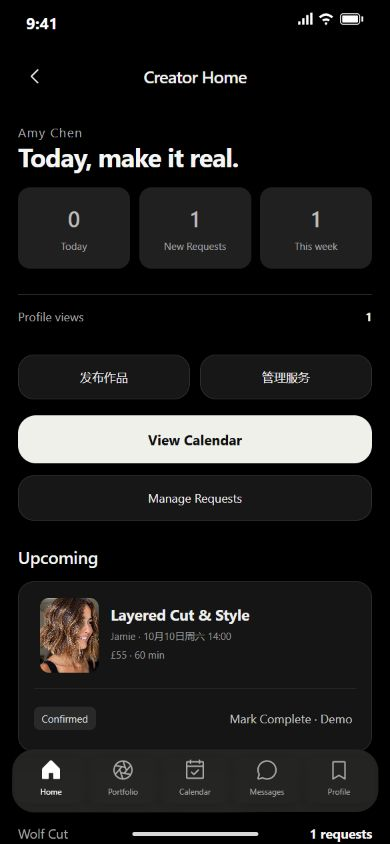

Two-sided marketplace · Interactive prototype · 2026
Try the tools around the words
User side 01 / 07
It starts with a picture
The feed is only real work by local Creators. You don’t need to know what the style is called.
User side 02 / 07
Who made it is right there
Every picture names its maker and is tagged by style, so “I like this” becomes something searchable.
User side 03 / 07
Make it real
One button turns inspiration into a search for people nearby who can actually do it.
User side 04 / 07
Matched by their work, not their shop
Creators are ranked by how close their own work is to your picture, with distance and price beside it.
User side 05 / 07
Proof before you book
Their similar work sits next to your reference, so trust comes from results, not stars.
User side 06 / 07
A real time, then book
Service, length and free times come from the Creator’s own diary. Your picture is attached automatically.
User side 07 / 07
Booked, with the look attached
The Creator sees exactly what you want before you sit down. No more explaining with a blurry screenshot.
Creator side 01 / 05
The same booking, from her side
Amy opens her workbench. The customer’s reference picture is already attached to the booking.
Creator side 02 / 05
Requests arrive as pictures
Before booking, people can ask “can you do this?”. She answers with one tap, or says it is not her style.
Creator side 03 / 05
She answers with her own work
Instead of typing, she picks her closest real result. The customer sees proof, not promises.
Creator side 04 / 05
Her diary decides what can be booked
Available, break or holiday, set once. Only these times ever appear to customers.
Creator side 05 / 05
Her work is her shop window
Every new result she uploads goes back into the feed, and the next customer finds her the same way.
One app. Two perspectives.
Keep scrolling: the same phone switches from the person looking for a style to the Creator who gets booked.
User · finds a lookCreator · gets booked
Scroll
Pick a kind of lookReal work, not stockKeep scrolling, keep savingThe picture you likedWho made it, and its styleMake it realYour referenceFind people nearbyYour pictureWho nearby can do itMore CreatorsWho she isProof they can do itCheck availabilityService and lengthA real time that fitsReview bookingBooked, picture attachedTime, price, placeToday at a glanceHer toolsA new booking, from a pictureStyle requestsA request with a pictureThe requestAnswer with her own workPick a dayHer diary, her rulesUpload or connect InstagramHer work is her profileWhich look?
Click the picture to find who can make it
Names, places and prices are demo data from the prototype.
Now use it yourself01
It starts with a picture
The feed is only real work by local Creators. You don’t need to know what the style is called.
02
Who made it is right there
Every picture names its maker and is tagged by style, so “I like this” becomes something searchable.
03
Make it real
One button turns inspiration into a search for people nearby who can actually do it.
04
Matched by their work, not their shop
Creators are ranked by how close their own work is to your picture, with distance and price beside it.
05
Proof before you book
Their similar work sits next to your reference, so trust comes from results, not stars.
06
A real time, then book
Service, length and free times come from the Creator’s own diary. Your picture is attached automatically.
07
Booked, with the look attached
The Creator sees exactly what you want before you sit down. No more explaining with a blurry screenshot.
08
The same booking, from her side
Amy opens her workbench. The customer’s reference picture is already attached to the booking.
09
Requests arrive as pictures
Before booking, people can ask “can you do this?”. She answers with one tap, or says it is not her style.
10
She answers with her own work
Instead of typing, she picks her closest real result. The customer sees proof, not promises.
11
Her diary decides what can be booked
Available, break or holiday, set once. Only these times ever appear to customers.
12
Her work is her shop window
Every new result she uploads goes back into the feed, and the next customer finds her the same way.
A Pinterest-like, image-led platform where every picture is real work by a real, local Creator. For users, it is a way to find a look and the person who can actually do it. For Creators, it is a living portfolio that turns their work into new customers.
Interactive prototype · field research planned- My contribution
- Product strategy, service and system design, information architecture, UI and AI-assisted prototyping of both the user and Creator sides
- Scope
- User + Creator mobile journeys
- Type
- Two-sided marketplace · mobile
- Stage
- Working prototype, pre-pilot
- Built with
- Spec-first, AI-assisted web prototype
Live prototype · demo data only
Use the prototype directly in the frame. Nothing you enter is real: accounts, prices and appointments are demo fixtures.
Running from the local review environment. This prototype is not a live commercial service.
The interactive version is being prepared for public release. Until then, the screens and flows below show the real prototype.
Choose the Consumer role and a preset demo name. Open a look → Make It Real → nearby Creators → service and availability. Switch to the matching Creator from Profile to inspect the same request. No real phone number or payment is needed.

Every image is real, and every image leads to a person you can book. A Creator’s portfolio is the user’s inspiration — the feed is the bridge between them.
01 / The problem
How might a picture someone loves lead straight to the person who can make it real?
“I love it, but I don’t know what it’s called.”
People have a picture, not a service name.
“Pinterest shows me looks, not who can do them.”
The maker may be abroad, unqualified or untraceable.
“I have to pick a salon before I see the work.”
Shops and stars come first; the person’s skill comes last.
“Instagram gives me likes, not bookings.”
Real work, every day — but few new customers.
User
Browse real work, save what they like, find who made it, compare and book.
Creator
Hairstylists, barbers, nail and makeup artists. Their portfolio is their profile, and it follows them if they change salons.
Pilot operator
Recruits the first local Creators, sets trust rules for original work and client consent.
02 / How the system works
Two sides, one feed of real work
One picture, two meanings: a portfolio piece for the Creator, inspiration for the user.
Who can do this look?
- Browse real work
- Work first, Creator after
- Save · taste learns
- Match a screenshot
- Area · price · time
- Book this look
How does my work bring customers?
- Upload original work
- Auto-tagged by style
- Services · prices · diary
- Requests & bookings
- See what people want
- Portable identity
The loop that makes it grow
- 01Creator uploads real work
- 02Work appears in the feed
- 03User discovers and saves
- 04Creator is revealed
- 05Book this look
- 06Service delivered
- 07New result joins the portfolio
- 08More real work in the feed
Each booking can create new real work — content, supply and demand grow together.
03 / Strategy
Starting a real-work marketplace
No Creators, no real work, no feed — so supply comes first.
- 01
One city, Creators who already post
Glasgow stylists already on Instagram.
- 02
Make joining effortless
Import and auto-tag their work. Likes → bookings.
- 03
A feed that is real from day one
Users browse and match local work.
- 04
Booking, then results flow back
New results return to the feed.
Trust: original work and client consent confirmed; user uploads stay private.
Proposed business model
First-customer fee
Only for new customers — no reason to bypass.
Creator Pro
Insights, diary, richer portfolio.
User premium
Image match & AI preview; core stays free.
Sponsored, later
Labelled promotion at scale.
A proposal to test, not validated revenue.
Design anatomy
The feed, taken apart.
The home feed of the prototype, layer by layer. Each layer has one job in getting from a picture to a person.
- 01
Where am I?
Just the brand and notifications. Nothing competes with the pictures.
- 02
What kind of look?
Hair, nails, makeup, outfit. One tap narrows the feed without typing a single word.
- 03
Is this real?
Every picture is real work by a local Creator, marked with a small Creator tag.
- 04
More like this?
The feed keeps going, and saving a picture teaches it your taste.
- 05
Where do I go next?
Discover, search, build a look, messages and profile. The plus in the middle builds a whole look.
Point at a line or a layer to light it up.
04 / The end-to-end journey
Discover
Browse a feed of real local work and save what you like.
Reveal
Open the work to see who made it, the service and the price.
Compare
Similar work from nearby Creators, filtered by area first.
Book this look
Pick a service and time; the Creator receives the same request.
Back to the feed
The finished result can join the Creator’s portfolio.
No suitable Creator nearby? The user can widen the area or leave a style request, which shows the platform where to recruit next.
05 / Design details
Close-ups of the decisions that carry the product. Select any image to enlarge it.
Every picture names its maker
“Real work by …” sits under the image, and Make It Real is the one primary action. Inspiration leads straight to a person.
Matches show proof, not just names
Distance, starting price, rating and three similar pieces of their own work, so a user compares results before profiles.
Only real free times
Times that are taken or too short for the service are greyed out; the chosen slot is the only red element.
Creators answer with their own work
Replying to a style request means choosing the closest real piece from the portfolio, so the promise is backed by evidence.
One calendar, three states
Available, holiday and time off are set per day; breaks stay visible so the Creator sees the shape of the day at a glance.
06 / Decisions & state logic
Location before ranking
An attractive match outside the chosen area cannot solve a local service need.
- Prototype response
- Apply the distance filter before tag-based ranking; offer an editable area when location access is unavailable.
- What to validate next
- Check whether participants understand the area limit and find relevant options.
Matching is not feasibility
Similar images alone cannot establish provider capability, price or time.
- Prototype response
- Keep work attribution and match labels explicit; connect selection to consultation and confirmation.
- What to validate next
- Check whether people distinguish inspiration, provider work and a confirmed service.
Keep both sides consistent
Availability and price can change between browsing and booking.
- Prototype response
- Booking conditions are rechecked on submit, and pending requests stay visible to both sides.
- What to validate next
- Test stale information, unavailable slots and declined requests before a real pilot.
07 / How it was built
I wrote the product specification first, then built the prototype with AI coding tools inside clear rules, so every screen follows the same logic.
- 01
Specification
One written spec covers both roles: feed, matching, booking, payment rules, cancellation and privacy.
- 02
Prototype
A mobile web app with about 40 routes across both roles. Data stays in the browser, on one demo clock in Europe/London time.
- 03
Rules in code
Search radius is a hard limit, a declined Creator is not shown again, pending requests expire, and the home address stays hidden until confirmed.
- 04
Checks
Automated checks run every main flow and edge case, and render every route in both roles.
08 / Challenges, gaps & opportunities
What is hard
Cold start is a supply problem
The feed only works if there are local Creators with real work nearby. A beautiful feed means nothing if no one in range can do the look.
Similar is not the same as possible
A picture cannot show hair condition, time or materials, so a consultation or quote step is still needed before booking.
Image rights and consent
“Real work” must be the Creator’s own, with client consent. The prototype still uses reference images collected for research; before any pilot they must be replaced with consented work from real Creators.
Not done yet
- Real accounts, payments and notifications
- Postcode geocoding and travel time
- Real image matching (scores are demo values)
- Testing with Glasgow Creators and users
Opportunities
Portfolio as acquisition
A Creator’s portfolio brings first-time customers, so a first-customer fee aligns platform income with real value.
Local demand insight
Requests show what people nearby are looking for, which Creators can act on.
Personal preview, if proven
An AI preview on your own photo could be a paid feature, once quality, speed and cost are tested.
How success would be measured
- Searches with similar work in range
- Match → message → booking conversion
- Creator reply time
- Repeat bookings and shared results
Proposed measures for a pilot, not results.
09 / Validation plan
Planned fieldwork · no findings claimed yet
The next phase connects the prototype to real people and settings. The following is a research plan, not a report of completed activities.
Explore the real journey
Ask consumers how they collect references, explain a look and decide whom to trust. Capture consented journey notes and anonymised examples.
Observe provider work
Discuss consultation, feasible requests, pricing and diary management with local providers. Record actual constraints before narrowing the pilot.
Test one complete task
Ask a participant to turn a chosen look into a suitable service request. Record completion, hesitation, misunderstood labels and recovery from no matches.
10 / Progress & release plan
Creator identities, reviews, distances, payments and messages are simulated. Matching uses tags and rules; style preview is a collage. Browser storage does not provide production authentication or cross-device sync. A separate, narrower V1 includes persistent APIs and an iOS source project, but is not a launched product.
- Now · connected whole-product mobile demo
- Next · interviews, observation and task-based testing
- Then · refine a limited local provider pilot
- Before release · real identity, provider onboarding, privacy, payments and notifications
Local implementation checks do not establish usability or business impact. Release and a real pilot require further validation and explicit approval.
Download case PDF ↓